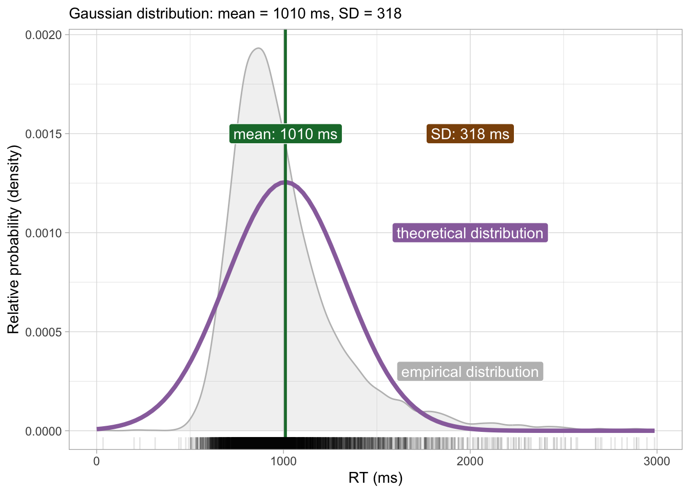

In the context of a quantitative research study, a simple objective is to figure out the values of the parameters of the probability distribution of the variable of interest: Voice Onset Time, number of telic verbs, informativity score, acceptability ratings, reaction times, and so on. Let’s imagine we are interested in understanding more about the nature of reaction times in auditory lexical decision tasks (lexical decision tasks in which the target is presented aurally rather than in writing). We can revisit the RT data from Tucker et al. (2019) to try and address the following research question:
RQ: In a typical auditory lexical decision task, what are the mean and standard deviation of reaction times (RTs)?
Now, you might wonder why the mean and the standard deviation? This is because we are assuming that reaction times (i.e the population of reaction times, rather than our specific sample) are distributed according to a Gaussian probability distribution. It is usually the onus of the researcher to assume a probability distribution family. You will learn some heuristics for picking a distribution family later depending on the general type of the variable of interest, but for now the Gaussian family will be a safe assumption to make. In statistical notation, we can write:
\[
\text{RT} \sim Gaussian(\mu, \sigma)
\]
which you can read as: “reaction times are distributed according to a Gaussian distribution with mean \(\mu\) and standard deviation \(\sigma\)”. So the research question above is about finding the values of \(\mu\) and \(\sigma\).
For illustration’s sake, let’s assume the sample mean and standard deviation are also the population \(\mu\) and \(\sigma\): \(Gaussian(\mu = 1010, \sigma = 318)\) (we calculated these in Chapter 11). Figure 21.1 shows the empirical probability distribution (in grey, this is a density curve calculated with kernel density estimation) and the theoretical probability distribution (in purple) based on the sample mean and SD: in other words, the purple curve is the density curve of the theoretical probability distribution \(Gaussian(1010, 318)\). We know by now that any sample mean and SD is biased, due to uncertainty and variability. What we are really after is the values of \(\mu\) and \(\sigma\) which are the mean and standard deviation of the Gaussian distribution of the population of RTs in auditory lexical decision tasks. In other words, we want to make inference from the sample to the population of RTs.
Code
mald <-readRDS("data/tucker2019/mald_1_1.rds")rt_mean <-mean(mald$RT)rt_sd <-sd(mald$RT)rt_mean_text <-glue("mean: {round(rt_mean)} ms")rt_sd_text <-glue("SD: {round(rt_sd)} ms")x_int <-2000ggplot(data =tibble(x =0:300), aes(x)) +geom_density(data = mald, aes(RT), colour ="grey", fill ="grey", alpha =0.2) +stat_function(fun = dnorm, n =101, args =list(rt_mean, rt_sd), colour ="#9970ab", linewidth =1.5) +scale_x_continuous(n.breaks =5) +geom_vline(xintercept = rt_mean, colour ="#1b7837", linewidth =1) +geom_rug(data = mald, aes(RT), alpha =0.1) +annotate("label", x = rt_mean +1, y =0.0015,label = rt_mean_text,fill ="#1b7837", colour ="white" ) +annotate("label", x = x_int, y =0.0015,label = rt_sd_text,fill ="#8c510a", colour ="white" ) +annotate("label", x = x_int, y =0.001,label ="theoretical distribution",fill ="#9970ab", colour ="white" ) +annotate("label", x = x_int, y =0.0003,label ="empirical distribution",fill ="grey", colour ="white" ) +labs(subtitle =glue("Gaussian distribution: mean = {round(rt_mean)} ms, SD = {round(rt_sd)}"),x ="RT (ms)", y ="Relative probability (density)" )

Figure 21.1: Empirical and theoretical density distribution of reaction times.
21.1 Gaussian models
A statistical tool we can use to obtain an estimate of \(\mu\) and \(\sigma\) is a Gaussian model. A Gaussian model is a statistical model that estimates the values of the parameters of a (theoretical) Gaussian distribution, i.e. \(\mu\) and \(\sigma\). We can provisionally describe the model using formulae, like this:
Now, here is where things get interesting. Bayesian approaches to statistics assume uncertainty in the parameters of the distribution one is estimating. So not only the observed values of RT are uncertain because they come for a probability distribution, but the parameters of the distribution are themselves uncertain. You can think of the mean and SD are uncertain variables that need to be estimated from the data. When we say a varible is uncertain, we describe it using a probability distribution. So the aim of a Gaussian model is to estimate the probability distributions of the parameters from the data (and the priors), rather than just their values.
We say that \(\mu\) comes from a probability distribution \(P(\mu_1, \sigma_1)\). We use a subscript \(1\) to differentiate the mean and SD of the main \(Gaussian(\mu, \sigma)\) distribution from the mean and SD of the probability distribution of the mean \(\mu\). Similarly, we say that \(\sigma\) comes from a probability distribution \(P_+(\mu_2, \sigma_2)\): \(P_+()\) is a (non-technical) way to indicate that the probability should include only positive values. Why? Because SDs can only be positive. By specifying \(P_+()\) we are constraining the probability distribution of \(\sigma\) to have positive values only. In sum, we need to estimate two probability distributions, \(P(\mu_1, \sigma_1)\) and \(P_+(\mu_2, \sigma_2)\). These are posterior probability distributions. You will learn more about posterior probability distributions in the next chapter. For now, just keep in mind that they are called posterior because the come from the combination of priors and data. But where are the priors?
21.2 Prior probability distributions
In the rest of this book, you will be using the default prior probability distributions, or priors for short, as set by brms, the R package we will use to fit Bayesian models. This means that you will not have to worry about priors while you step your toes into the ocean of Bayesian statistics. However, it is helpful to learn a bit of context in relation to priors. After all, one of the big differences between frequentist and Bayesian statistics are indeed the priors (\(P(h)\) in Bayes’ Theorem in Chapter 21). After learning about priors in this chapter, you can safely assume that priors are handled by brms for you and you should not worry until after you completed this course. Note that in actual research, thinking about priors is a necessary step, even if one ends up using the default brms priors.
So, how do we go about choosing priors for the model above? Once you know that you are trying to estimate the (posterior) probability distribution of \(\mu\) and \(\sigma\) you also know that you should choose a prior for each parameter. In other words, each parameter in the model gets its own prior. But what is a prior exactly? It is just a probability distribution! With Gaussian models, it is common to use Gaussian probability distributions as the priors for the mean and SD of the Gaussian distribution. Yes, you read right: we use Gaussian distributions as priors for the parameters of the Gaussian distribution. Note that priors should be chosen before seeing the data. Here, we have seen the data many times, so let’s just pretend we haven’t. For example, let’s say that we believe that, prior to seeing the data, the mean RT is a value from a Gaussian distribution with mean 900 ms and SD 200 ms: \(Gaussian(900, 200)\). Do not worry as to how I came up with those numbers. Since you will not need to choose priors yourself, for now just focus on understanding how priors fit in Gaussian models. The \(Gaussian(900, 200)\) distribution is shown in Figure 21.2.
Code
xseq <-seq(0, 2000)ggplot() +aes(x = xseq, y =dnorm(xseq, 900, 200)) +geom_path(colour ="darkgreen", linewidth =1) +labs(x =element_blank(), y ="Density" )
Figure 21.2: The prior for \(\mu\).
The prior distribution we have chosen for \(\mu\) says that values around 900 ms are more probable than values away from 900. We can now pick a prior for \(\sigma\), the overall standard deviation. Let’s say the SD can be described by a half-Gaussian prior probability with mean 0 and SD 200. Why half? Because as we said earlier, SDs can only be positive and with a Gaussian distribution with mean 0 we can just take the positive half to constrain the distribution to positive values. It is also common for priors on standard deviations to set the mean to 0 (to understand the reason, you will have to learn more about priors, so we won’t delve into this). Our half-Gaussian prior distribution is shown in Figure 21.3.
Code
xseq <-seq(0, 750)ggplot() +aes(x = xseq, y =dnorm(xseq, 0, 200)) +geom_path(colour ="darkorange", linewidth =1) +labs(x =element_blank(), y ="Density" )
Figure 21.3: The prior for \(\sigma\).
The prior for \(\sigma\) indicates that we expect values closer to zero to be more probable that larger values. We can rewrite the model formulae above as:
With the data and priors we are now ready to actually fit the Gaussian model to estimate the posterior probabilities of \(\mu\) and \(\sigma\). We will do this in the next chapter.
Tucker, Benjamin V, Daniel Brenner, Kyle Danielson D, Matthew C Kelley, Filip Nenadić, and Michelle Sims. 2019. “The Massive Auditory Lexical Decision (MALD) Database.”Behavior Research Methods 51 (3): 11871204. https://doi.org/10.3758/s13428-018-1056-1.